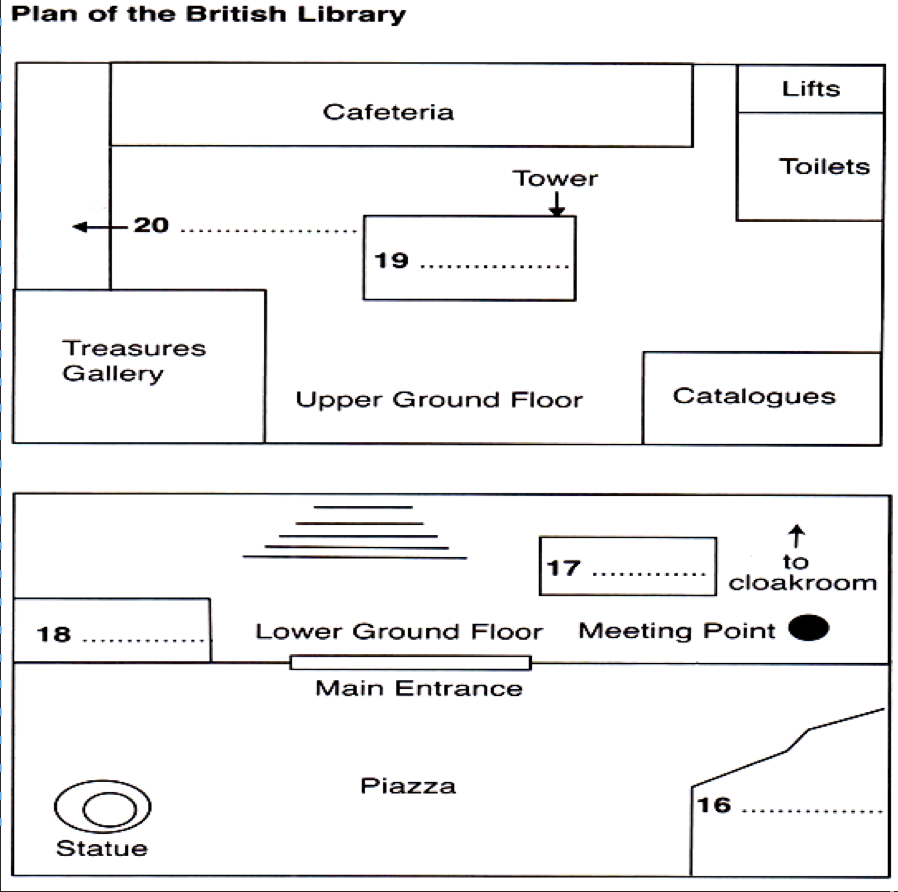

Choose the correct letter, A, B or C.
Example:
Martin wants to
What is Martin’s occupation?
The friends would prefer somewhere with
Phil would rather live in
Complete the table below.
Write NO MORE THAN THREE WORDS AND/OR A NUMBER for each answer.
| Details of flats available | ||
|---|---|---|
| Location | Features | Good (✓) and bad (x) points |
| Bridge Street, near the 4 |
⦁ 3 bedrooms ⦁ very big living room |
✓ 5 £
a month ✓ transport links x no shower x could be 6 |
| 7 | ⦁ 4 bedrooms ⦁ living room ⦁ 8 |
✓ 9
and well equipped ✓ shower ✓ will be 10 x £800 a month |
Complete the sentences below.
Write NO MORE THAN THREE WORDS for each answer.
11 The reading rooms are only open for group visits on .
12 The library was officially opened in .
13 All the library rooms together cover m².
14 The library is financed by the .
15 The main function of the library is to provide resources for people doing .
Label the plan below.
Write NO MORE THAN THREE WORDS for each answer.

16
17
18
19
20
Choose the correct answer, A, B or C.
Project on work placement
The main aim of Dave’s project is to
Dave’s project is based on schemes in
How many academic organisations returned Dave’s questionnaire?
Dave wanted his questionnaires to be completed by company
Dr Green wants Dave to provide a full list of
Complete the note below.
Write NO MORE THAN TWO WORDS for each answer.
Introduction
Findings
Complete the sentences below.
Write NO MORE THAN THREE WORDS for each answer.
31 Bilingualism can be defined as having an equal level of communicative in two or more languages.
32 Early research suggested that bilingualism caused problems with and mental development.
33 Early research into bilingualism is now rejected because it did not consider the backgrounds of the children.
34 It is now thought that there is a relationship between bilingualism and cognitive skills in children.
35 Research done by Ellen Bialystok in Canada now suggests that the effects of bilingualism also apply to .
Choose the correct letter A, B or C.
In Dr. Bialystok’s experiment, the subjects had to react according to
The experiment demonstrated the ‘Simon effect’ because it involved a conflict between
The experiment shows that, compared with the monolingual subjects, the bilingual subjects
The results of the experiment indicate that bilingual people may be better at
Dr Bialystok’s first and second experiments both suggest that bilingualism may